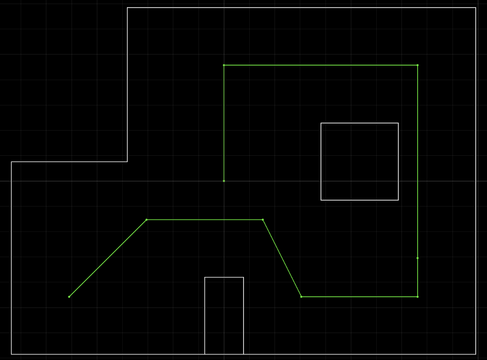
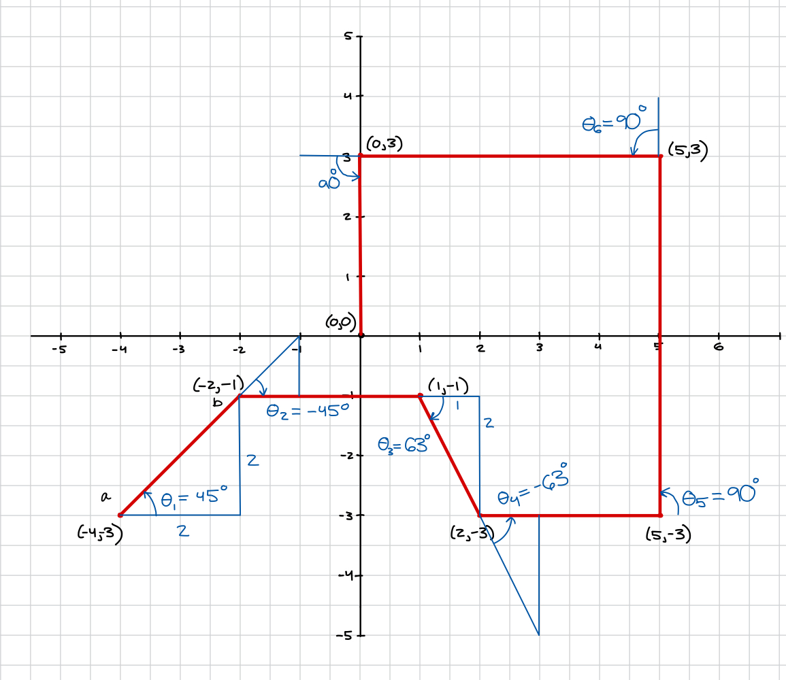

Lab 12: Path Planning and Execution
Goal: Have the robot navigate through a set of waypoints as quickly and accurately as possible.
Overview
We made it to the final lab! For this one I will be attempting to navigate through the provided path with the following waypoints:

- (-4, -3) ← start
- (-2, -1)
- (1, -1)
- (2, -3)
- (5, -3)
- (5, -2)
- (5, 3)
- (0, 3)
- (0, 0) ← end
For this lab, I will be implementing an open-loop solution. The reason I am doing this is because I struggled a lot with my closed-loop solution in early testing. My localization was not doing a good job, there was a lot of drift, and I also was constrained by other classes I needed to study for, so I went with the strategy of hard-coding it.
Implementation
First, I added a function for traveling a specific distance.
case DRIVE_X_MM: {
float distance_mm;
success = robot_cmd.get_next_value(K_p); if (!success) return;
success = robot_cmd.get_next_value(K_i); if (!success) return;
success = robot_cmd.get_next_value(K_d); if (!success) return;
success = robot_cmd.get_next_value(distance_mm); if (!success) return;
drive_distance_mm = distance_mm;
// get distance to drive
pid_target_distance = drive_initial_tof - drive_distance_mm;
// reset PID state
pid_data_count = 0;
pid_position_error = drive_initial_tof - pid_target_distance;
pid_prev_error = pid_position_error;
pid_integral_term = 0;
pid_derivative_term = 0;
pid_start_time = millis();
pid_last_time = millis();
last_tof_distance = drive_initial_tof;
last_tof_time = 0.0;
prev_tof_distance = 0.0;
prev_tof_time = 0.0;
pid_run_flag = 1;
break;I also had another function called STOP_ALL that stops every PID process and resets the car.
With these two functions and previous functions for turning a set angle, I simply calculated the angles I needed the car to turn and hard-coded it into a loop.

This was all the Python-side code:
import math
feet_to_mm = 304.8
points = [(-4,-3),(-2,-1),(1,-1),(2,-3),(5,-3),(5,3),(0,3),(0,0)]
turns = [45.0, -45.0, -63.0, 73.0, 90.0, 90.0, 90.0]
for i in range(len(points)):
p1 = points[i]
p2 = points[i+1]
# turn to correct heading
ble.send_command(CMD.MAP_SCAN, f".18|0.0|.01|{-1.0 * turns[i]}|0|0")
await asyncio.sleep(2)
ble.send_command(CMD.STOP_ALL, "")
await asyncio.sleep(2)
# drive forward correct distance
dist_in_ft = math.sqrt((p2[0] - p1[0])**2 + (p2[1] - p1[1])**2)
dist = dist_in_ft * feet_to_mm
ble.send_command(CMD.DRIVE_X_MM, f"0.08|0.0|0.1|{dist}")
await asyncio.sleep(3)
ble.send_command(CMD.STOP_ALL, "")
await asyncio.sleep(2)Tuning and Results
Now, I could run the robot open-loop. At the beginning, I ran into problems with PID speed — the robot often overshot its location, so I lowered the max speed to 90 PWM. I also had to re-tune the PID control variables to adjust for the slower speed. I spent a lot of time just re-running the code above, since often times the robot would get close to a good run, but hit the wall and ruin the run.
Here is my final run! The robot did not need any assistance and it got close to the final destination.
Collaboration
I didn't refer to any other pages, since I was doing open loop — all I needed to do was make sure my functions worked as I wanted and I hard-coded the angles in myself. I used Claude to style the website.
Thank you for a great semester! I definitely learned a lot and enjoyed how hands-on the class was — definitely one of my favorite classes I've taken at Cornell, even though it took a lot of time and hours of debugging, it was very rewarding.